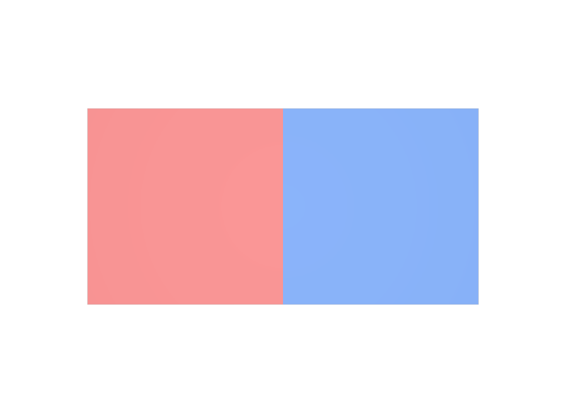

値の配列のほうを個数に合わせる
indexを付けたのに値も8個書いてしまうと、使い回しの効果がありません。個数を満たすのはindicesのほうです。
STEP 39 · PRIMVAR INTERPOLATION
値を一度だけ書き、番号で何度でも使い回します
今日これだけ
公式情報に基づく説明
Primvarには、値そのものを並べた配列とは別に、indicesという位置番号の配列を付けられます。indicesがあるとき、Interpolationが要求する個数を満たさなければならないのはindicesのほうで、値の配列は使う種類の数だけあれば足ります。実際に使われる値は、indicesの各要素が指す位置の値です。この形式をIndexed Primvarと呼びます。
USDA
#usda 1.0
(
defaultPrim = "World"
metersPerUnit = 1
upAxis = "Y"
)
def Xform "World"
{
def Mesh "Panel"
{
uniform token subdivisionScheme = "none"
int[] faceVertexCounts = [4, 4]
int[] faceVertexIndices = [0, 1, 4, 3, 1, 2, 5, 4]
point3f[] points = [
(0, 0, 0), (1, 0, 0), (2, 0, 0),
(0, 1, 0), (1, 1, 0), (2, 1, 0),
]
color3f[] primvars:displayColor = [(0.85, 0.2, 0.2), (0.15, 0.35, 0.85)] (
interpolation = "faceVarying"
)
int[] primvars:displayColor:indices = [0, 0, 0, 0, 1, 1, 1, 1]
}
}値は赤と青の2つだけです。interpolation = "faceVarying"はFace Vertexの総数である8個を要求しますが、その8個を用意しているのはindicesのほうです。前の4つが0なので1枚目のFaceは全部赤、後の4つが1なので2枚目のFaceは全部青になります。
結果

uniformの絵とも見た目は同じになります。examples/lesson-24f/indexed.usda / Apple USD Tools 0.25.2 のusdrecord（Hydra Storm・Metal）/ macOS 26.5.2・Apple M4Diagram
Python
from pxr import Gf, Sdf, Usd, UsdGeom
stage = Usd.Stage.CreateNew("indexed.usda")
UsdGeom.Xform.Define(stage, "/World")
mesh = UsdGeom.Mesh.Define(stage, "/World/Panel")
mesh.CreateSubdivisionSchemeAttr("none")
mesh.CreateFaceVertexCountsAttr([4, 4])
mesh.CreateFaceVertexIndicesAttr([0, 1, 4, 3, 1, 2, 5, 4])
mesh.CreatePointsAttr([
Gf.Vec3f(0, 0, 0), Gf.Vec3f(1, 0, 0), Gf.Vec3f(2, 0, 0),
Gf.Vec3f(0, 1, 0), Gf.Vec3f(1, 1, 0), Gf.Vec3f(2, 1, 0),
])
pv = UsdGeom.PrimvarsAPI(mesh).CreatePrimvar(
"displayColor", Sdf.ValueTypeNames.Color3fArray, UsdGeom.Tokens.faceVarying)
pv.Set([Gf.Vec3f(0.85, 0.2, 0.2), Gf.Vec3f(0.15, 0.35, 0.85)])
pv.SetIndices([0, 0, 0, 0, 1, 1, 1, 1])
stage.Save()読む側ではpv.ComputeFlattened()が便利です。これはindexを解いた後の配列、つまりこの例では8個の色を返します。pv.IsIndexed()でindexが付いているかを判定でき、pv.GetIndices()でindexの配列そのものを取得できます。
USDA → Python mapping
USDA
primvars:displayColor = [赤, 青]↓Python
pv.Set([Gf.Vec3f(...), Gf.Vec3f(...)])USDA
primvars:displayColor:indices = [0, 0, 0, 0, 1, 1, 1, 1]↓Python
pv.SetIndices([0, 0, 0, 0, 1, 1, 1, 1])USDA
（indexを解いた後の8個）↓Python
pv.ComputeFlattened()Beginner notes
よくある間違い
indexを付けたのに値も8個書いてしまうと、使い回しの効果がありません。個数を満たすのはindicesのほうです。
値が2個しかないのに2や-1を指すと、値を取り出せません。indexは0から「値の個数 − 1」までです。
Pythonでpv.Get()を呼ぶと、indexを解く前の短い配列が返ります。実際に使われる並びが必要なときはpv.ComputeFlattened()を使います。
Glossary
int[]の配列。Primvar名の後ろに:indicesを付けて表す。Official references
確認日: